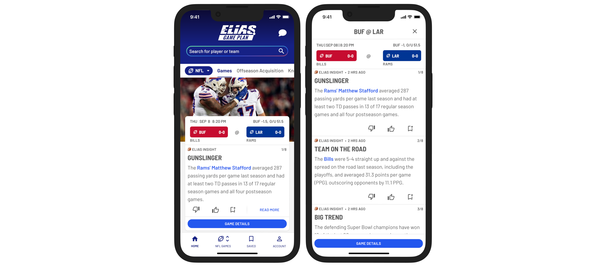
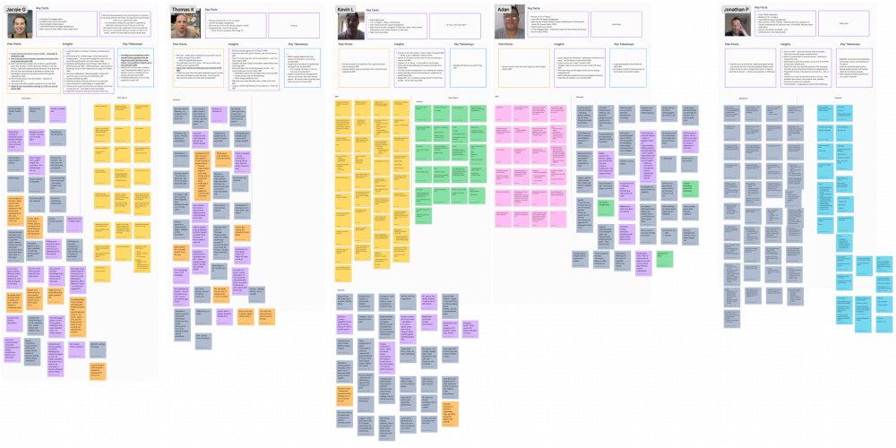
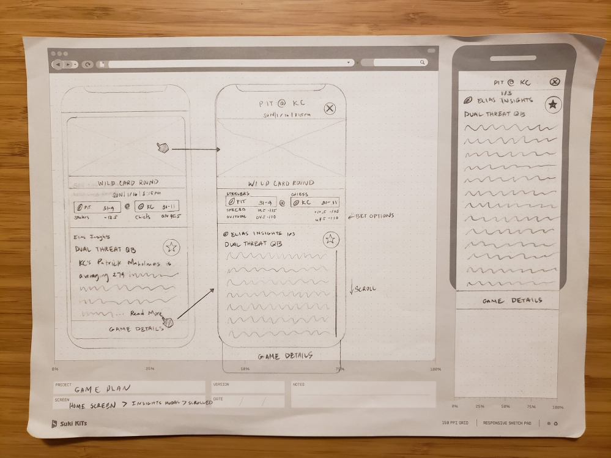
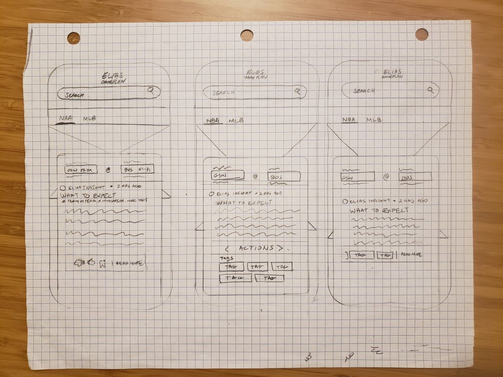
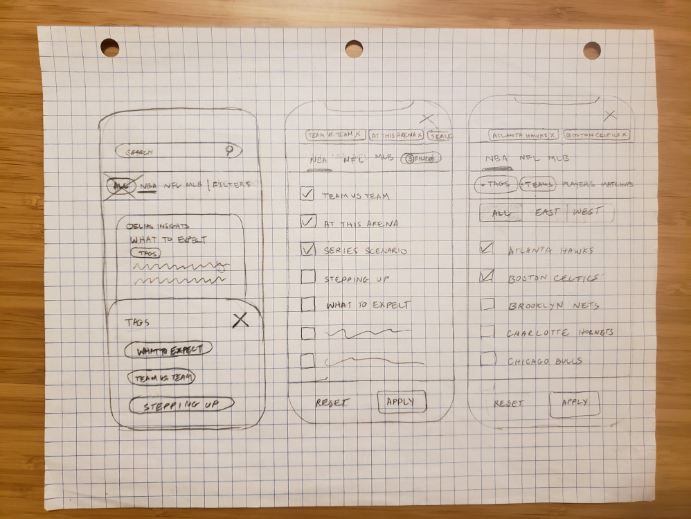
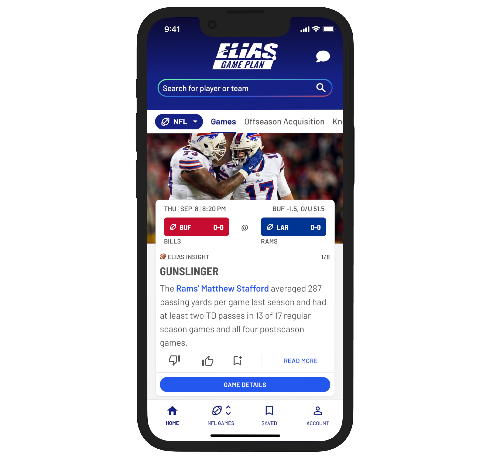
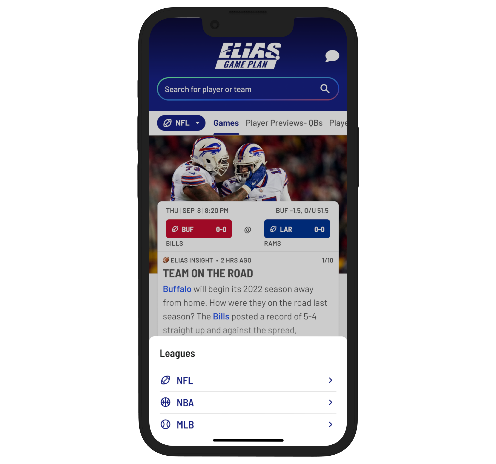
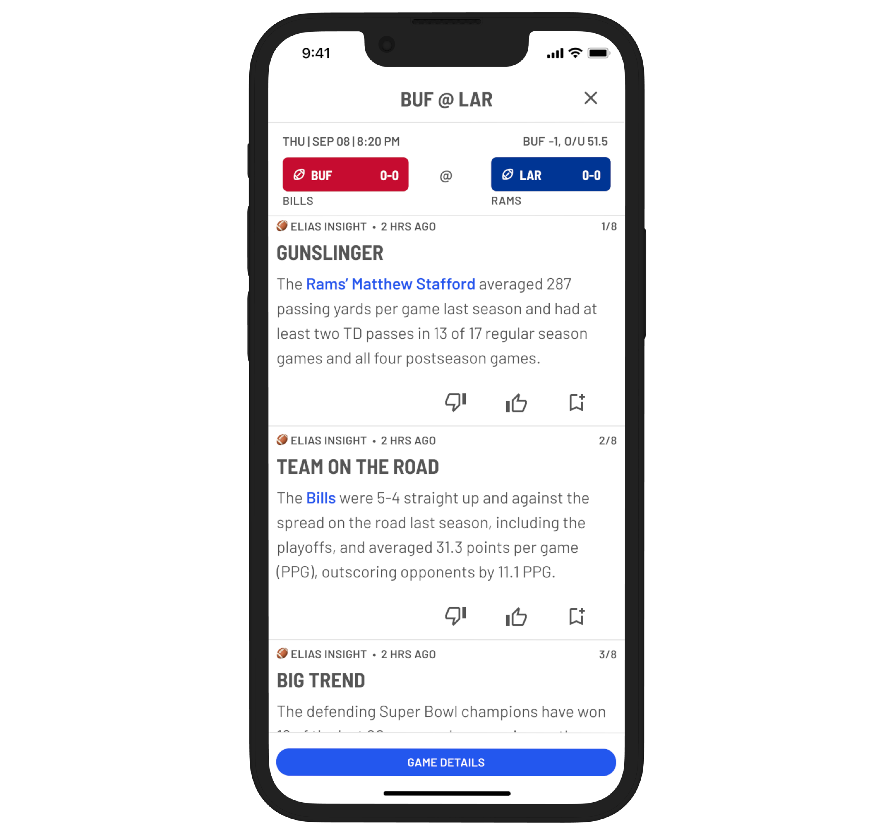
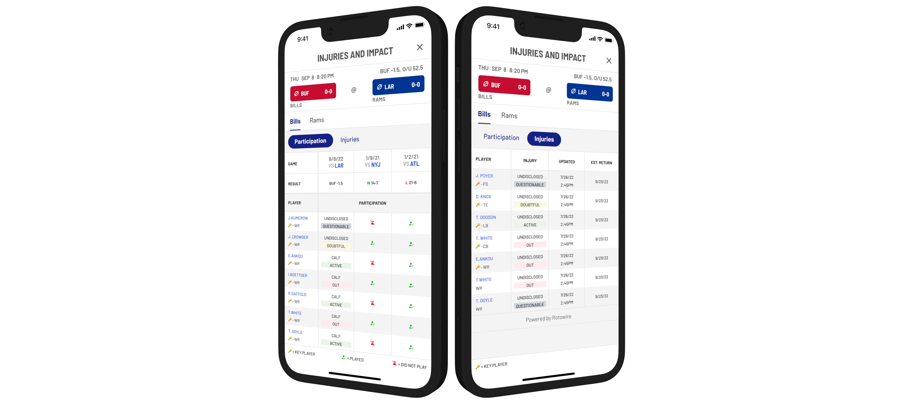

Making Sports Insights Fans Need Easier to Find With Categorization
Elias Game Plan app users are sports fans, bettors and fantasy sports players. They rely on the Game Plan app for it's informative insights for the edge they need to make their betting and fantasy endevours a success.
| Goals | Increase user engagement with insights cards, surface insights of various categories so that users can discover the ones that matter to them, and improve the readability of insights. |
| My Role | Research, experience design, visual design, interaction design |
| Process | Brainstorming ideas, sketching concepts, prototyping solutions, usability testing, iterating based on feedback, user acceptance testing |


Fantasy Football Player Interviews
Conducting interviews with fantasy football players proved very valuable for validating assumptions and learning about common pain points.
"It's difficult to determine what information is accurate or useful when searching for fantasy strategies online. I'm constantly checking multiple sources."

Full Screen Insights
With insights being the primary value proposition of the app, it was really important to improve the experience of reading those insights. The previous design displayed insights on a narrow card whose hight automatically fit the length of the insight's copy which could get pretty lengthy at times with some of the longer form insights. Also, related insights would appear on cards in a horizontally scrolling carousel.
I sketched some concepts of the cards in a way that kept them in a uniform height. Longer insights would be truncated and a button would reveal the entire insight along with related insights in a full screen modal.

Tagged Insights Sketches
Our product team wanted to enable users to explore insights of specific categories. On the back end via CMS, tags or categories could be applied to each insight. But after sketching a few concepts it became clear that adding hashtags or some type of interactive tag would only clutter an insights card which already had several competing interactive elements.

Filtering Insights Sketches
Once I realized that the tagging approach wouldn't work well, I considered filtering component for users to select which insights categories they wanted to see but this just seemed like too much UI.

Landing On the Solution
After several discussions with our Product Manager and Lead Engineer, we realized that neither tagging nor filtering components were optimal solutions and turned our attention to the navigation. We could add a subnavigation that could be customized in the CMS for each league.
There was one problem with this solution: The header area already had several vertically stacked UI elements (the logo, a chat button icon, a search bar and a tabbed nav bar). Adding a subnav bar would cause the header area to take up too much vertical space.

A Navigation To Take You Further
In an effort to avoid adding to the vertical space taken up by nav elements, I made the design decision to collapse the league tabs into a dropdown button that reveals the league nav items inside of an action sheet that slides in from the bottom.
The "Games" tab will be the default tab for each league whenever the league is in season. When the season is not going on, the "Games" tab would go away and other content would be featured.

Research Driven Insights
I was not sure how users would respond to no longer being able to read more than five lines of an insight without opening a model to reveal the entire insight. Usage data in a Braze report showed that more insights were being read on average after introducing the full screen modal.
Also, the newly added embeded links in the insights copy led to more visits to players and teams pages.
Conclusion
Insights are the bread and butter of the Game Plan app so we want to continue to improve how users consume and interact with them. This project was a step in the right direction.
While Game Plan insights are a must have for the app's users, some people want a closer look at the stats and data for themselves. Drilling down to the game details screens allows users to view more information about the matchup and each team including sought after injury reports.
